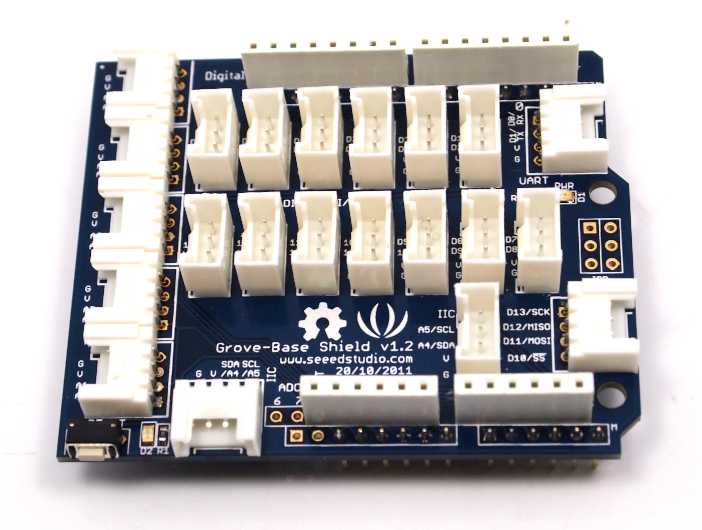
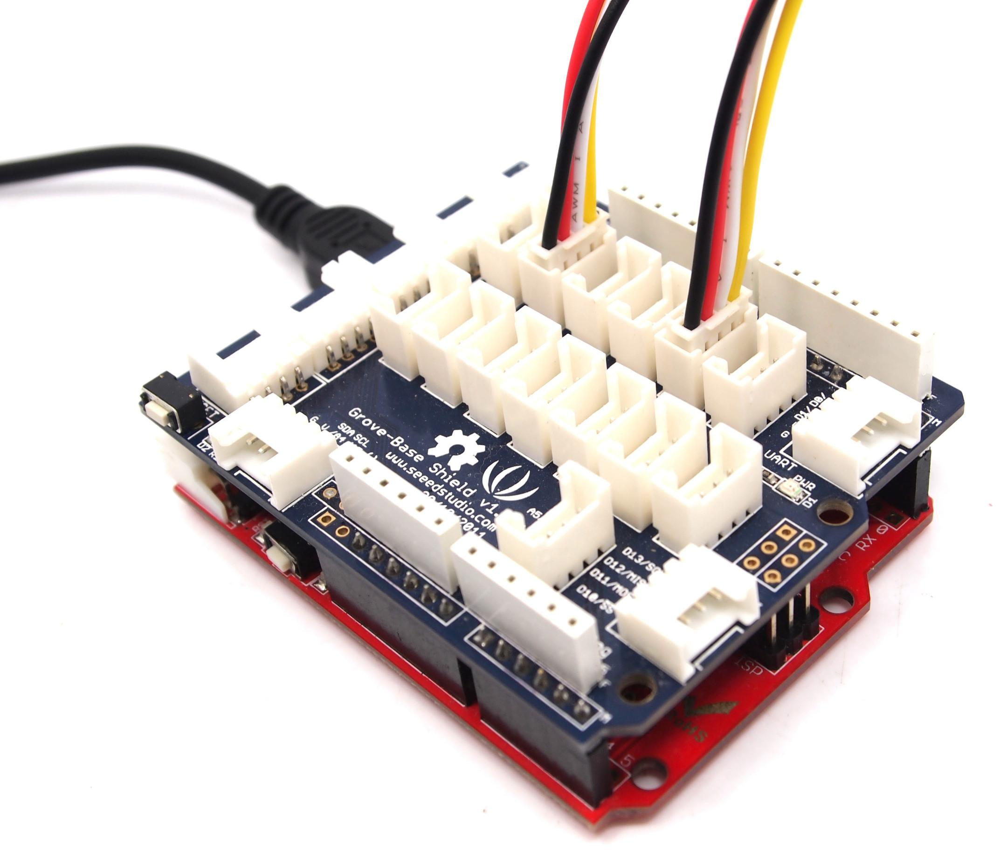

The Grove base shield board is very similar in fashion to an Arduino shield board, and in fact is used as such with our Seeeduino or Mega board. Here is a top-down view:

For those working with Seeduino or Arduino boards, the layout should be quite familiar. The labels on the "Power" header pins may be confusing - the new Arduino Uno has two ground pins between the Vin and 5v, and label "GND" twice, but the Base Shiedl labels match the Duemilanove which label "GND" once, wider, to indicate both pins.
Model:SLD12148P
The warnings and wrong operations possible cause dangerous.
The purpose of the base shield is to allow easy connection of any microprocessor input and output pins to the Grove units. Each socket is clearly labelled with its matching I/O pin. For a more detailed examination of the Base Board, please consider the following diagram:

May include key specification and other specifications.
There is one small thing to take note of when connecting to analog or digital sockets. Each socket contains 5V, GND, and two I/O pin connections:

When using the digital I/O, note the staggered alignment of the pins – that is, one socket handles D1 and D2, the next D2 and D3, and so on. If you are going to use an input Grove and an output Grove which have two signal pins simultaneously (e.g. LED module and button module), separate your wires so that a socket is between them as such:

Wires for two signal Grove cannot sit side-by-side on the Base board because one pin (such as D2) will be multi-using. Or, if two Grove units only use one digital pin, such as the tilt switch and the piezo, they can sit together on the Base board as they only use one of the digital lines in the connecting wire and therefore will not interfere with each other. It is the same as the Analog I/O sockets. Make sure you know the silkscreen of each socket before you start wiring.
Includes important code snippet. Demo code like :
Demo code { }
All the components used to produce the product.
Please list your question here:
If you have questions or other better design ideas, you can go to our forum or wish to discuss.
| Revision | Descriptions | Release |
|---|---|---|
| Grove - Starter Kit v0.9b | Initial public release | Jan 14, 2011 |
Bug Tracker is the place you can publish any bugs you think you might have found during use. Please write down what you have to say, your answers will help us improve our products.
The Additional Idea is the place to write your project ideas about this product, or other usages you've found. Or you can write them on Projects page.
The resources need to be downloaded, like Eagle file, Demo code, project or other datasheet.
Click here to buy Grove - Base Shield: http://www.seeedstudio.com/depot/grove-base-shield-p-754.html?cPath=132_134.
It is one components of Grove pack sale, Users can buy GROVE - Starter Kit V0.9b at http://www.seeedstudio.com/depot/grove-starter-kit-p-709.html?cPath=138.
This documentation is licensed under the Creative Commons Attribution-ShareAlike License 3.0 Source code and libraries are licensed under GPL/LGPL, see source code files for details.
Links to external webpages which provide more application ideas, documents/datasheet or software libraries
Copyright (c) 2008-2016 Seeed Development Limited (www.seeedstudio.com / www.seeed.cc)